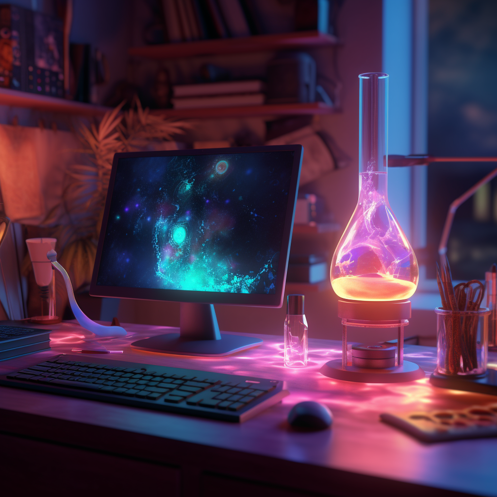
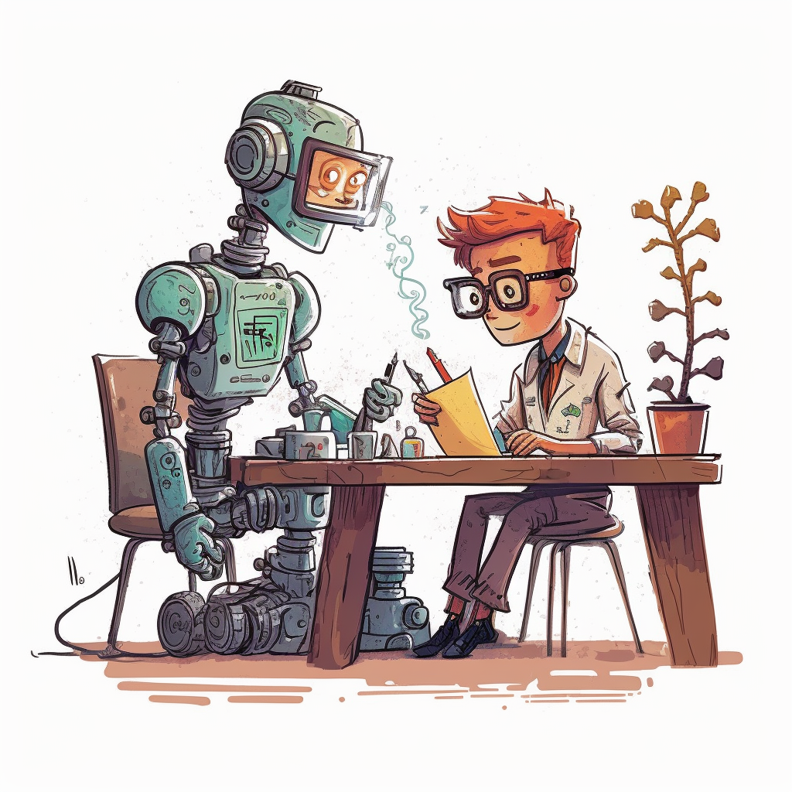
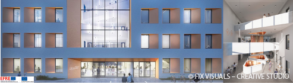

Multiple PhD and PostDoc Positions
See also the PDF version of this announcement.

Background
The design and discovery of new molecules and materials is slow. A major reason for that is that our research approach often relies on trial-and-error and is bottlenecked by information transfer: We would greatly benefit from having all information as well as intuition of all chemists at our fingertips. Machine learning can help us democratize access to this expert knowledge and help us navigate high-dimensional design spaces. In our lab will develop data-driven strategies for designing materials that work in the real world around three main research pillars: 1) Novel inductive biases (including “soft” inductive biases via LLMs), 2) Human-in-the-loop active learning, and 3) Novel learning paradigms. We will develop robust open-source software and also contribute to international research data initiatives. The PostDoc position will have a focus on this research data management aspect and the use of novel tools (such as LLMs) in this context.
Due to their unique tunability (and the correspondingly large design space) and functionality, we will focus on polymers, where we will closely collaborate with world-leading experimental partners to validate our predictions and build novel modeling and data frameworks.
For more background on my thinking see this website and my publications, you can contact him me email or on Twitter.
Your profile
- Some background in chemistry, Chemical Engineering, Computer Science, Mathematics, Physics, or related fields.
- Motivation for working on challenging projects, passion for scientific research, and thrive for excellence.
- Strong teamwork and communication skills.
- Growth mindset and inclusive team culture.
- Excellent written and oral communication skills in English.
- Ideally, programming and machine learning experience (e.g., in Python, Julia).
For the Ph.D. positions a Master’s degree or a four- or five-year Bachelor’s degree in Chemistry, Chemical Engineering, Computer Science, Mathematics, Physics, or related fields.
For the PostDoc positions a Ph.D. is required for employment.
We offer
- Be part of the story from the beginning when we start up an ambitious research program on digitizing chemistry and materials science.
- Become part of an international and interdisciplinary research group within a scientific network that offers research and infrastructure at the highest level.
- We collaborate with world-leading experimental groups in Jena as well as the Helmholtz Center in Berlin that have access to unique high-throughput experimentation as well as characterization setups.
- Participate in international and national conferences, summer schools, and workshops (we have allocated a significant amount of resources for travel).
- Besides excellent in-house computational infrastructure (you will have multiple A100 cards waiting for you), Kevin is co-leading the ChemNLP project, for which we have access to resources from Stability.ai
- Become part of a research group that cares about your personal development: We will create tailored personal development plans, that we review every year.
- A family-friendly working environment with a variety of offers for families: University Family Office (JUniFamilie) and flexible childcare (JUniKinder). University health promotion and a wide range of university sports activities.
- Attractive fringe benefits, e.g., capital formation benefits (VL), Job Ticket (benefits for public transport), and an occupational pension (VBL)
- 30 days of recreational leave in the calendar year plus one day off for Dec. 24 and Dec. 31 that should be taken without any guilt.
Application process
Submit your application via this form
Selected candidates will be invited first to a non-technical discussion and then in a second round of a technical interview (including a ~25 minutes presentation).
Candidates with disabilities will be given preference in the case of equal qualifications and suitability.
We will provide support for visa applications and any other potential relocation issues.
We will also support fellowship applications if you would prefer joining the lab on your own funding. Reach out for more details on suitable fellowships.
Diversity and equity

At the Friedrich Schiller University (FSU) people from a wide range of (cultural and academic) backgrounds study and work together. At FSU, and in particular in our group, we see diversity as a strength and key for our success. We rely on different ways of thinking to create the most impactful research. Our group will be a place in which everyone–irrespective of the background feels safe and will be successful.
Doing a Ph.D at the Friedrich Schiller Univeristy

The Friedrich Schiller University is a traditional university with a strong research profile rooted in Jena, at the heart of Germany. Since its foundation, it has been one of Germany’s most famous places to study, where outstanding academics like Goethe and Schiller left their marks. As a university covering all disciplines, it offers a wide range of subjects. Its research is focused on the areas Light—Life—Liberty. It is closely networked with non-research institutions, research companies (links going back to Carl Zeiss, Otto Schott, and Ernst Abbe) and renowned cultural institutions. With around 18,000 students and more than 8,600 employees, the university plays a major role in shaping Jena’s character as a cosmopolitan and future-oriented city (of around ~100 000 inhabitants).
Overall, Germany is a beautiful and safe country with great work-life balance and life satisfaction.
You will receive a very competitive salary with which you will live comfortably and save money for leisure activities. Students need approximately 700 EUR monthly for rent, food, health insurance, books, and personal items.
Your workspace

Our lab (CZS Research group “Polymers for energy applications”) will be located in the newly constructed Center of Energy and Environmental Chemistry Jena II at the Landgrafencampus (close to one of the best viewpoints of the city), where four new buildings with ca. 7500 m² lab space have been built over the last 10 years.
Frequently, start-companies involving Ph.D. students and Postdocs are created, and a new incubator for chemistry related start-ups is currently built next to the campus.
Funding
Our group is supported by the Carl-Zeiss Stiftung, the Helmholtz-Center Berlin and integrated in multiple collaborative research centers.